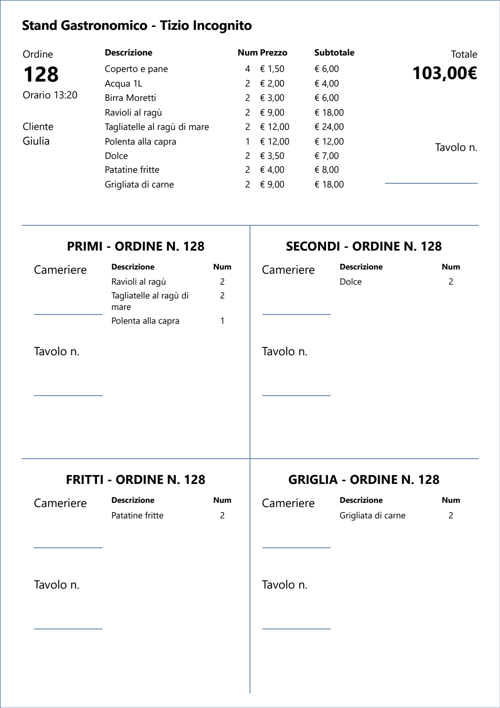
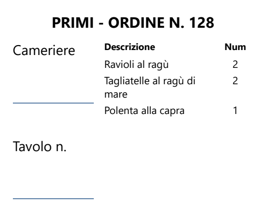

Stand Gastronomico nasce da un'esigenza concreta: l'ho scritto per la nostra associazione e lo uso personalmente durante le sagre. Non è un gestionale progettato in un ufficio: sta acceso accanto alla cassa mentre la fila avanza, e la sera dice quanto si è incassato.
A chi è pensato
- Pro Loco, associazioni, comitati e gruppi di volontari che organizzano sagre, feste paesane e cene di comunità.
- Stand con una sola cassa e persone che si alternano al banco, da poche decine a qualche centinaio di coperti in una serata.
- Chi non ha un tecnico a disposizione: si installa, si configura una volta e si usa.
- Chi vuole ordini, scorte e incassi nello stesso posto, su un solo PC, anche senza connessione.
1. La cassa: l'ordine diventa un foglio per la cucina
Il cliente arriva allo sportello, dice cosa vuole e paga. Tu inserisci le righe in Cassa — prodotto, eventuale variante, quantità — controlli il totale e salvi.
Poi premi Stampa: il foglio esce direttamente sulla stampante predefinita, senza anteprima. Il salvataggio registra la vendita e scala le scorte; la stampa è un'operazione separata e si può ripetere quando serve una copia.

Perché il foglio è diviso in quattro
La parte alta è il riepilogo: serve alla cassa, al cliente e a chi controlla i conti. Sotto, il foglio è diviso in riquadri, uno per reparto, con la sola descrizione dei piatti e la quantità. Ogni riquadro ha due righe da riempire a mano: cameriere e numero del tavolo.
Il cameriere porta il foglio al tavolo, lo divide seguendo i riquadri e consegna ogni parte al reparto giusto: i primi ai primi, la griglia alla griglia. Ogni reparto legge solo la sua parte, senza dover interpretare l'ordine intero.

Nel modello predefinito il Bar non ha un riquadro: le bevande restano nel riepilogo in alto e si servono subito. Le sezioni si possono cambiare — quali reparti e che intestazioni — intervenendo sul template di stampa, senza ricompilare il programma.
2. La cucina: il foglio passa di mano
Quando i piatti sono pronti, il cameriere li ritira e li porta al tavolo. Il programma non segue lo stato dei piatti: non ci sono semafori “in preparazione” o “pronto” da aggiornare. Il coordinamento resta tra le persone e sul foglio, che è l'unica cosa che il reparto ha davanti.
3. Il magazzino durante il servizio
La scorta si scala quando salvi un ordine, in base alle quantità vendute. Quante porzioni restano davvero, però, lo sai tu: la cucina ti segnala cosa sta finendo e tu aggiorni le disponibilità.
In Magazzino fai doppio clic sulla cella della disponibilità e scrivi quante porzioni restano: 0 significa esaurito e il prodotto non è più vendibile, mentre una cella vuota significa disponibilità illimitata.
4. Fine giornata: quantità e incassi
Quando il servizio finisce, in Statistiche scegli la sessione della serata: la tabella raggruppa le vendite per prodotto e variante, con prezzo unitario e totale, e in fondo mostra il totale degli incassi.
Con Esporta in Excel ottieni un file .xlsx con gli stessi dati, senza bisogno di Excel installato. Da lì stampi il riepilogo per l'associazione o lo passi a chi tiene i conti.
Il programma non stampa da solo il riepilogo delle vendite: prepara il file, la stampa la fai dal foglio di calcolo.
Cosa fa il programma, cosa resta manuale
Lo fa il programma
- registra ordini e vendite e li raggruppa per sessione;
- scala le scorte al salvataggio e blocca gli ordini oltre la disponibilità;
- stampa il foglio d'ordine diviso per reparto;
- esporta quantità e incassi in Excel.
Resta in mano alle persone
- il passaggio dei fogli tra cameriere e reparti;
- l'aggiornamento delle porzioni rimaste durante il servizio;
- la stampa del riepilogo serale dal file Excel;
- le decisioni: cosa finire, cosa rimpiazzare, quando fermarsi.
Prima della sagra: quattro controlli
- Crea la sessione della serata in Sessioni e lasciala attiva.
- Controlla in Listino che i prodotti siano attivi, con prezzi e varianti giusti.
- Imposta in Magazzino le porzioni di partenza, se tieni sotto controllo le scorte.
- Fai una stampa di prova su un ordine vero e verifica che il foglio esca leggibile sulla stampante che userai.
Da dove iniziare
La guida utente descrive ogni schermata con le stesse parole del programma; la configurazione spiega come cambiare i nomi delle categorie; il template di stampa come adattare il foglio.